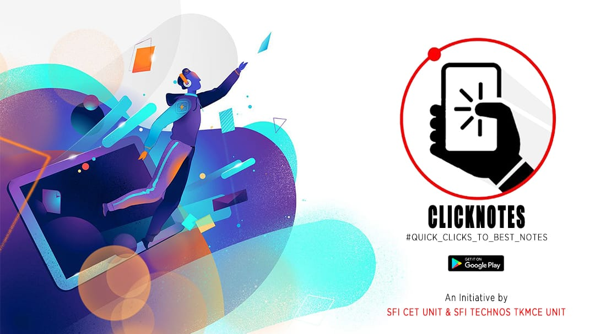

സ്വാതന്ത്ര്യം
Independance
ജനാധിപത്യം
Democracy
സോഷ്യലിസം
Socialism
sfi_cet
SFI CET Unit is the Left-wing student organisation of College of Engineering Trivandrum. Although the organisation was actively involved in resolving several conflicts related to the professional colleges since the beginning of 1970s, the CET unit of SFI was officially formed in 1977.
The Student Federation of India as a whole represents the foundation of a reformist, democratic and libertarian education framework which will guarantee social equity and scholarly self reliance.It endeavors to accomplish this by joining the whole Indian graduate network towards the reason for a general and public system of schooling guaranteeing the right to education for all.

.jpg)
.jpg)
College events
VELICHAM
Velicham is the charity wing started under SFI CET Unit. Velicham, with the aid of the students of CET, aims to help the needy and uplift the indigent. Under the umbrella of Velicham is an initiative called Kaithang, started with the aim to provide food for those in need of it. Students from each department are asked on a particular day to bring food from their homes. The crowd-sourced food is then distributed for free to the needy at various medical colleges and orphanages. The volunteers at Kaithang work diligently for the upliftment of the downtrodden. The activities that are conducted here are such that they involve the students and inculcate in them a flair for social activism and charity.
TV Challenge
In the wake of the coronavirus pandemic, the Centre announced a nationwide lockdown was implemented on March 24. Since then, schools have been shut and classes were resumed through online mode. To make sure students don't miss out on education just because Internet, TVs, and Smartphones are a luxury, SFI CET Unit with the help of alumnis distributed TVs for students from the financially disadvantaged communities who do not have access to television or smartphones at home. A total of 42 televisions were distributed across the state so that students could watch relevant education programmes from the channel.
SFI online magazine
SFI has the history of bringing out some of the best annual campus magazines Kerala has ever seen. Such magazines are the chronicles of students’ creativity and a mirror to the cream of activities and expression of imagination. "അതിർരേഖ"is the latest released Magazine under Samskara CET which converges thoughts towards the privileges around us. The unveiling of the same was done by Team Instagramam through their social media pages.
OUR INVEIGHINGS
Against Credit Criteria - 2016
The credit criteria for eligibility for higher semesters were reduced from 35 to 26 ( Comrades including the Unit secretary was booked by the Police).
For the proper conduction of University Examinations - 2016
Protest objecting University's intention of including an external private entity for the conduction of the exam. Protests included boycotting the examinations. The movement spread to various colleges. It ended in a Ministerial level session with the VC in which the demands put forward by the SFI were agreed upon.
Against Yearback and Credit Requirement - 2017
The Day and Night Protest that lasted 2 days that ceased in reduction of minimum credit requirement and the year back system made only applicable to S5 and S7 students. One among the other substantial demands of the same was to address the issue of revaluation funds. The University decided to provide refund to students who have a 15% difference in their grades after revaluation.
For the Inclusion of IV for KTU Students - 2018
Protest in College for inclusion of provision for an IV for KTU batch students that has been provided for the KU batch. As a result the 2015 KTU batch went for IV and permission for the successive batches for the same was provided by the College authorities.
For Grace Marks, Duty Leave, Revaluation Refunds etc. - 2019
The struggle for a number of other rights, including the granting of Revaluation Refunds to those entitled, reduction of attendance for PG Students from 85% to 75%, Duty Leave and Grace Marks was initiated by SFI CET Unit. As a result of the strike, students were granted duty leave and grace marks in the 2019 regulation. In addition, the Revaluation Refund amount of the eligible candidates was transferred to the college and the list of eligible candidates was published.
For allowing PG students with backpapers for Submission of their Final Year Project - 2019
It was not possible for PG students who had back papers to submit projects for evaluation. Regarding the same, SFI dealt with prompt action and consequently SFI Technos State Committee member Mr Midhun and CET Unit secretary held discussion with concerned authorities. Later all those students who were eligible for the last year were allowed to present their project for further evaluation.
Scaling Down of Series Examinations - 2019
The Mechanism previously adopted by the college authorities to conduct 2 internal exams in a day was mentally exhausting and was detested by the student community. The SFI CET unit protested against the same promptly and the same was cancelled to adopt a more acceptable one exam per day.
For receiving the Revaluation Refund - 2019
The Amount about 2 lakh Rupees was transferred to the college account from KTU for Revaluation Refund. There wasn't any appropriate action from the college authorities even after 4 months. SFI vehemently protested against the same and the Principal took necessary action.
The 3 day Long Protest - 2019
The 3 day long 19/21 protest in which the Unit secretary, UUC, SFI Technos Conviener and 15 other comrades were booked by the police. A Protest of such a magnitude that the University complied to the demands on Duty Leave ,Grace mark(Grace mark regulation 2015), PG minimum attendance criteria ( 85 to 75 percentage), Other needs for MCA students etc. which have been the core issues of Protest of the SFI for the past 3 years. The Vice Chancellor agreed to the 19 such demands put forward by the SFI.
For the conduction of Examination of 2016-17 Batch - 2020
Protest against the University’s notion to not conduct the re-exam for the cancelled S7 Exam (2016-20 Batch). The students were expected to write the supplementary examinations instead. The discussion with the appropriate authorities by SFI led to a positive and promising press release for the students on behalf of the University.
college union programs
CET, the most prestigious institute in kerala has always been top notch in academic excellence as well as in cultural and technical activities. Our vibrant student community partakes in these events with almost excitement and enthusiasm. The main events among them, conducted by the college union are Diwani, Drishti and Disha which are also known as 3Ds. These 3Ds provide platform for students to showcase not only their technical but also cultural talents.
Dhwani
Dhwani is our annual inter-college cultural fest conducted with all colours and grandeur. It is one of the largest fests in Kerala students from more than 150 colleges participate in this mega event Dhwani. This splendid event is a personal pride for each of us. The 3-4 day long. starts with CET might and mdudes various talks and competitions. Mam highlights of Dhwani are the proshows with bollywoodnight. The presence of various celebrities add colours and Youth to this event: spot light, khildsan, FS and chorionight are other charms of this event which we can experience scintillating and amazing performances of participants other literary and cultural events are also conducted during these days
Drishti
Drishti is the annual technical fest held at CET It conducts numerous technical events and workshops for students. This is a touchstone to evaluate the engineering aptitude and potential of students it also improves the technical caliber of participants. Process are also a major attraction to this event
Disha
This is the program conducted to welcome and receive our freshers and to develop their togetherness with seniors and as well as among themselves. It creates a friendly and relaxed atmosphere in the campus for them. This programme incluids various literary and cultural competitions which gives a healthy department spirit with them. The winning department fetches the Disha cup with almost pride and excitement.
Sargam
It is the interyear competitive festival which spans over 3 days. Even though it's main pivotal area is the Sargam stage as it commence the entire College is pumped to a new life.
Tharangam
The interdepartmental PG fest that is fuelled with zest and excitement. It is something to look forward to .celebrates with many cultural events.it makes joy ful moments among PG students.
Sports Day
The College of Engineering Trivandrum conducts its annual sports day every year with considerable participation from students and staffs. Many prodigies who has proved their expertise and skills in various sporting events throughout such opportunities provided in the College. It is this blend of excellence in Academics and other events that makes CET specialABOUT SAMSKARA CET
SAMSKARA CET is the cultural wing of SFI CET Unit which is responsible for several cultural events in the Institute around the year. With a view to encouraging young performing artists, the establishment caters regular cultural programmes in all branches of performing arts, like dance, drama, music, etc. Though the right to be creative belongs to everyone, the college policies on arts and culture was not in favour of students during the 80’s - this is what gave rise to the SAMSKARA CET. This cultural body was born out of the thirst for freedom, self-expression and rebellion. There is an abundance of cultural talent in the college premises and SAMSKARA provides a platform for those talents to flourish. The competitive academic environment and co-curricular activities on campus keep the students on their toes.
SAMSKARA CET EVENTS
Dance off
Dance Competition for the Freshers was conducted on August 17 to rejuvenate the spirit of the students and to ensure their further participation in the activities of the college. The event was in succession of the previous dance offs conducted by SFI Samskara CET in the preceding years for the Freshers of the respective years. The students displayed spectacular skills and as it was a very tight competition it was hard to select winners. The details of the competition has been posted on the SFI CET samskara page.
Freshers Day
SFI Samskara conducted Freshers Day Day Celebration On August 5 with manifold mind revamping programs to facilitate the new students of the institution to the lifestyle and culture of the college. It was attended by almost all the new students and the support received from them adds to the success of the Event.
Diwali Night
The festival of lights was celebrated in the most grand way possible by SFI Samskara CET Unit with consideration of the sentiments of the students associated with the festival. The lights that stood lit on the transcending happiness and emotions of unity. It was an aesthetic visual treat that was predominantly evident on the students who participated in the festivals.
Art Revolution
Communalism and separatism were the threats that our great nation survived in its long struggle for independence, in consolidation after Independence and in making of the nation till today. Art revolution aims to talk politics through art, sketches, paintings or poetry that affirms, supports and depicts the Unity and Integrity of the nation. It aims to harbour novel ideas of secularism, equality, liberty and Social justice.
Guerir
Inter Department Art Fest was conducted from April 1 to 4 with vibrant enthusiasm. The Four day event had many arduous and creative events like Mimicry, Poem Writing, Cartoon etc...which came under the genres of Literature, Drawing, Drama and Dance events.The much eventful campus life abruptly came to an end stagnating the enthusiasm that was abundant amongst the students. It was essential that the students were given the opportunity for sustaining the same in this unprecedented time. It broke the status quo of creativity that was spread among the students due to the Covid 19 pandemic. The event planned the revival of the eminent artistic and cultural echelons of the Institution. The event was evidently a success as the participation was overwhelming in consideration with the situation .IPL Dhamaka
As the nation was locked on to TV for this season of IPL SFI CET union launched IPL Dhamaka. It was a whole set of random competitions like prediction of Winners, man of the match, Champions etc.. The participation of the events were significant. The correct predictions were awarded points and in the end these were added to find the winners. The detailed of the same is posted on the instagram page of SFI CET Samskar.
Lock Down diaries
" The things that haunt us are not the most beautiful things but those little things that we did that defined who we are" Our College is not just about teachers, students, books and morbid buildings. If it was it wouldn't have been different from the other numerous institutions that revolve around the same. We have a family that harbours everything despite their designations and reflects all those into symphonies that only we can hear. The people without the college wouldn't be the same and are indeed the essence of its uniqueness. SFI CET samskara launched LockDown diaries so that the Non teaching staffs and other people who have been part of this institution to share their feelings and moreover experience. The same was posted on the instagram page of SFI CET samskara. The same accounted for the blissful times that we came through and provides hope for the foreseeable future and something to look forward after this difficult situation
MATHRUKAM CET Unit
There is no force equal to a woman determined to rise, and mathrukam is a group of women determined to rise and help other women rise here at CET. It is the women’s wing of SFI CET Unit and focuses on breaking stereotypes and supporting each other. The wing also reacts on issues and is active at helping women react to the same. Anjuradh who was the former convener of the unit gave a whole new path for working and encouraged different activities and brought mathrukam out of the box. Looking at past activities, they made a video survey to find out the level of basic sex knowledge in people about periods, sex, virginity, gender identification etc. The results were shocking as most people do not know anything about the same and moreover, myths like how to identify gay people filled the room. From there the wing started working on implementing sex education among students by conducting a mathrukam week which was given the title "ഞാൻ തെവിടിശ്ശി" which is a word which most people use to defame a woman and brand her negatively. The name was chosen to speak aloud that we accept the title and that there is nothing bad about people who are given this title. The mathrukam week was divided into three sections, first “ ചരക്ക്” representing menstruation and period health and also took steps to supply menstrual cups for free to those who wanted a change from the unhealthy napkins after the session but due to the lockdown they couldn’t deliver it to the students but will be done once the college reopens. The second part was “വെടി” talking about sex and breaking and the third “പടക്കം” was on the point that everyone are same and also was to understand that sexuality is not just limited to male and female and to be proud about your choice. The wing organized a photography contest on breaking the stereotypes and the poster gets a special mention by putting a moustache to a woman breaking the normal and had a very good response from Cetians and during lockdown the unit conducted awareness classes and reacted to issues involving patriarchy to break them down.
Caricature Challenge
The pandemic and floods have driven the state to an economically weak situation and this is when the unit decided to contribute to the CMDRF by doing something creative. The unit brought together a few students from our college who are good at drawing and art , and decided to draw and sell caricatures of those who paid them for that (rupees hundred for each caricature). The team collected a total of Rupees one lakh three thousand seven hundred and seventy two(Rs.103772) and was entirely given to the CM's Disaster Relief Fund.
GOVERNMENT SCHOLARSHIPS
Pragati
Pragati scholarship was launched by the Ministry of Human Resource Development, Government of India. The scheme, currently implemented by the All India Council for Technical Education (AICTE), concentrates on supporting and empowering girl students to pursue degree courses in technical and engineering fields. Nearly 4000 scholarships are provided annually under this scheme, which impart skills that will be necessary for pursuing a prosperous career. For more details :
Saksham
Saksham scholarship was launched by the Ministry of Human Resource Development, Government of India. The scheme, implemented by the All India Council for Technical Education (AICTE), focuses on encouraging and supporting specially-abled students. In addition to financial assistance, every young scholar under this is provided opportunities that help them move forward fearless and prepare for a bright future. For more details :
MCM
The Minority Merit Scholarship is the flagship program of the Ministry of Minority Affairs (MOMA), which aims to provide financial support to deserving students belonging to minority communities. The purpose of the program is to give scholars under this program the opportunity to study professional and technical courses at the graduate or graduate level. Under this plan, many talented students who miss out on education due to financial constraints are closer to their goals.
For more details
Post-Matric Scholarship
The Post-Matric Scholarship Program is a program initiated by the Ministry of Minority Affairs (MOMA) to provide financial support to meritorious students belonging to minority communities. The plan aims to provide scholarships to brilliant students from economically weaker sections, so as to provide them with better higher education opportunities. Under this program, students come across various possibilities that could enhance their careers.
Central Sector Scholarship Program
The Central Sector Scholarship Program aims to provide financial aid to talented students in situations of financial difficulties while pursuing higher studies. The program provides a total of 82,000 scholarships to economically disadvantaged areas, thus achieving its goal. The program guides scholars to higher education by assisting them in their daily expenses.For more details :
Primee Minister Scholarship Scheme
The Prime Minister Scholarship Scheme (PMSS), run by the Welfare and Rehabilitation Board, Ministry of Home Affairs, Government of India, is a scholarship scheme that aims at encouraging higher professional and technical education for the dependent wards and widows of Central Armed Police Forces & Assam Rifles (CAPFs & AR) and State Police Personnel. The PM Scholarship Program was launched in 2006-07 and helped thousands of students pursue their dream careers. For more details :
Prime Minister's Scholarship Scheme for RPF/RPSF Prime Minister's Scholarship Scheme for RPF/RPSF 2020 is being offered by the Security Directorate, Ministry of Railways, Government of India. This scheme is available for the wards or widows of Ex/Serving RPF/RPSF personnel who are below the rank of a gazetted officer. The purpose of the plan is to financially support and encourage these candidates to pursue technical and professional education. Under this, many students are determined to succeed and pursue their careers. For more details :
E-Grantz Scholarship
E-grantz Scholarship Portal is an Online Centralised Grants Disbursal System initiated by the Government of Kerala. Different pre-matric and post-matric scholarships and stipends are provided to SC/ST/ OBC and other ethnic minority community students living in Kerala.The system is an online software aiming to help meet the expenditure of various educational assistance schemes of the Scheduled Castes Development Department. If a student cannot apply for the scholarship online, the e-grantz portal claims that the institution can apply for the scholarship on behalf of the student. To date, the scholarship has benefited 300,000 students studying in more than 3,400 institutions in Kerala. For more details :
PRIVATE SCHOLARSHIPS
Siemens
Are you a bright person led by passion aiming to achieve bigger heights but held back due to financial constraints? Siemens Scholarship Program provides you the right and unique support to make your dream come true. Apart from financial backing, SSP also helps you groom your personality and instills in you professionalism. The training and opportunities offered by SSP helps you get an edge over others thus enhancing your career possibilities. With SSP, your hopes and ambitions get the right direction. For more details:
Foundation for Excellence
FFE finds bright students from financially constrained backgrounds and propels them to the path of excellence in the fields of Technology, Engineering and Medicine. FFE scholarship program helps you free your true potential and talents from financial hardship. In addition to that, the program is strengthened with individual mentorship by alumni and volunteers on soft skills and various other opportunities thus helping the scholars prosper. Beginning your journey with FFE can get you closer to your dreams. For more details:
NKW
The NKW program was developed in memory of the late chemical engineer and medical doctor Nidhi Kadir Watson. The program encourages financially disadvantaged students to discover their dreams, preventing real passion and talents from being held back. The scholarships offered under NKW program help the scholars become remarkable in their field and widen their academic vision. For more details:
MEA
MEA is a non-profit, non-political, and secular organisation of engineering graduates of Malayalee origin. Through its scholarship initiative, financial assistance is provided to many engineering undergraduates in India. The scholars under this get opportunities to build up their professional and social life through discussions and charitable activities. Overall it advances the quality of education and helps an individual be socially secure. For more details:
Scholarships From College
HOPE PLUS
HOPE PLUS is aiming to address the huge disparity among the various backward segments of the society in accessing quality higher education programs. This objective will be the long-term culmination of all the small steps that we take now. HOPE (Helping Outstanding Pupils in Education) project of CGCT has spread across the length and breadth of Kerala evoking real hope in the lives of hundreds of students who are economically backward but academically brilliant. With effective mentoring and handholding from Grade 8 onwards, these kids have started to dream big. HOPE PLUS is the logical next step which is simply aimed at making these dreams a reality.
GEMS
GEMS is a monetary support provided to 25 most deserving financially weaker students in each year of their study. The scholarship amount per student for one academic year is Rs. 10,000.
Other Scholarships Provided by The College
CETAA Awards
CARE (New Initiative)
CET Roots
CET Roots is a global fellowship of progressive minded socially committed engineers and students from CET. It was established with the vision to createb a global network of students and professionals who work together for developing socially committed and competent professionals and pooling their expertise and resources for Betterment of the Society in general and Kerala in particular. CET Roots aims to support students of CET in their academic & extracurricular activities with a view to enhance their professional competence and employability. They encourage CET students to display exemplary academic achievements; all-round performance on technical talents, discoveries, thesis and projects of social relevance etc. They organize extensive career networking facilities for placement guidance that can be extremely useful not only for students of CET but to all the members of the society as well and to inculcate creativity and entrepreneurship among the members.
CLICK NOTES
Encouraging the idea of quality education, SFI CET UNIT together with SFI TECHNOS TKMCE launched a new and innovative app Click notes, a mobile application that aims to provide quality notes for KTU Students.Unlike most KTU tutorial tools, Click notes allows students to access and share notes of all semesters module wise. The features of Click notes include personalized anytime anywhere learning, Handwritten Notes, Previous year Question papers and Syllabus. The application is an initiative to reach more students who may be in the search of notes or academic help to ease their exam preparations.

Click here
CET OCW
CET, considered as one of the most prestigious institutes in the country, was the home of many brilliant minds that have proved their mettle in a variety of fields. Our exemplary alumni in correspondence with CET OCW, our own original online learning platform, launched a series of lectures which could act as the perfect guide regarding the dubiousness around the scope of placement post the lockdown.
CLUBS OF CET
SHASTRA
SHASTRA is the technical wing of our college union working towards overall development of professional students. SHASTRA started its journey in march 2020 and is still guiding CETians to cope with the present scenario going on. ACE (academic and career excellence) initiative by shastra aims to increase awareness of various unexplored domains and facilitation to utilize the explored ones fully.
IET-CET
The Institution of Engineering and Technology (IET) is the largest multidisciplinary professional engineering institution in the world. The IET has an educational role, seeking to support its members through their careers by offering a professional home for life, producing advice and guidance at all levels to secure the future of engineering.
ISTE-CET
Indian society for Technical Education (ISTE) is a national professional body consisting of nearly 40,000 engineering teachers and academicians. A student chapter of ISTE with more than 700 student members is functioning in this institution. The activities of ISTE have several dimensions such as career development, subject upgradation, personality development, communication skill development, aptitude development, preparation for competitive examination etc. Mock interviews, training for competitive examinations, group discussion and public speaking are held at regular intervals. The aim of ISTE is to prepare faculty and students into master trainers and master students respectively. In order to achieve these goals several programs are organized regularly. The programs include invited talks by experts from the industry, industrial visits, seminars, subject upgradation workshops, competitions, quiz programmes, audio visual shows etc.
IEDC-CET
The Innovation and Entrepreneurship Development Cell (IEDC) is an active student-run cell under CET Centre for Interdisciplinary Research (CCIR) that seeks to create and promote innovation and entrepreneurship skills among the students of CET. The cell works in close association with Kerala Startup Mission, CET –TBI and other student clubs. It envisions fostering innovative thinking and becoming a facilitator between the students inside the campus and the industry outside by acting as a hub of contacts and network that helps in finding the wannabe entrepreneurs the right people to approach for any task.
CETalks
CETalks is the official college radio of our college. It was a talk series program that was founded in January 2015 during the 75th anniversary celebrations of the college. Programs are held every week and is one of the best entertainment sources for cetians. Series like dedications and confessions, pop talks, one day one RJ, behind the chalk dust, cctv etc are the highlight programs. A big team consisting of RJ’s, program and content writers, design crew, technical supporters work together behind every program. CETalks also organises stage programs occasionally.
ISHRAE CET
The Indian Society of Heating, Refrigerating and Air Conditioning Engineers (ISHRAE) is a national professional body consisting of eminent HVAC&R professionals. ISHRAE today has over 9,000 professionals as members, and over 4,500 Student-members. The organisation has a group of eminent HVAC professionals across India. We the students of College of Engineering Trivandrum have begun the era of ISHRAE in our college. The club mainly concentrates on HVAC systems to provide better and innovative ideas to bring highly efficient systems. The club mainly focuses on students' career and to provide industrial level recognition and experience to the students, further we are planning to bring innovative ideas from the students to provide the best to our society. As part of its objectives to promote the interests of the HVAC&R Industry, ISHRAE CET is involved in various activities. ISHRAE CET reaches out to all its members and seeks their active participation & involvement in all the Events/Programs organized by the society.
Acumen
Acumen is the Civil Service Aspirants Society of CET. Acumen guides you in your CSE preparation and helps you get a strong foundation for your preparation. It provides you with daily news,weekly tests and orientation sessions. The environment maintained in Acumen is such that it will guide you on the right path to chase your dreams of being an IAS officer.
Rangavedi
This theatrical club aims to encourage dramatical skills by the students in the form of skits, mime, plays etc. The club also hosts different competitions to encourage the theatrical skills of the students. Theatre workshops are conducted in order to explore the possibilities for interdisciplinary linkages between different forms of performing arts
Malayalam Club
The malayalam club aims to provide students with the opportunity to enhance and showcase their linguistic skills in the malayalam language. The club aims to inculcate in students of engineering a flair for the language and hone their literary skills. The activities of the club are orchestrated with the singular motive to induce in students the importance and beauty of the regional language.
Zenith Motorsport
Zenith Motorsport CET, under SAE CET, is the official formula student team of the college. At present, we are an interdisciplinary group of 30 students from various years. The team is intended for designing and fabricating a formula student vehicle and race amongst different teams across the nation, the major events being SAEINDIA SUPRA and Formula Bharat. This team brims with talent and passion for motorsport and racing and works as a family bundled with love.
Team Farrago
Team Farrago, the bonafide work of a dozen aspirants thriving to explore the intricacies of technicalities in forging an efficient tricycle at College of Engineering Trivandrum Kerala. Team Farrago is a platform where aspirations transform to perspiration to develop an EFFICYCLE which is essentially an innovation for the future.The rich legacy of team Farrago has been vital in harnessing the young minds of the college with technical expertise and scientific enthusiasm. This charming club has also bagged scores of achievements which also exposed the technical extravaganza of our students.
Team Herakles
Team Herakles is the official Baja Team of the College of Engineering, Trivandrum. Baja is an intercollegiate competition conducted by SAE, is a platform where undergraduate students showcase their technical and managerial skills in manufacturing an ATV from design to reality. The team has garnered numerous accolades in various National-level competitions and made a niche for themselves in the Baja competitions. With inception of the e-Baja team in 2018 March, accompanied by an aim to fabricate an electrical all terrain vehicle, the team participated in the preliminary design and evaluation round by SAE India and qualified with an AIR 7. The team has two primary branches, teh m-Baja and the e-Baja.
SAE CET
Society of Automotive Engineers (SAE) is an international organization that assembles all the scattered automotive engineers under one umbrella with an aim of collectively focusing on the advancement of the automotive industry. SAE organizes various competitions worldwide, thus promoting engineering students to expand their knowledge in the field of automotive. Being an SAE member benefits you by letting you to participate in different events conducted by SAE in the national and international levels.
BBC CET
Be Bold and Confident (BBC) CET is a club that aims to increase the student's self-confidence and make them bold and efficacious. The various activities that are conducted by the club are designed to help them hone their eloquent skills that help them very much in the future. The activities include pre-placement drive where you get to hone your cognitive skills to perfection through a series of aptitude tests, coding rounds, mock GDs (Group Discussions), interviews and much more.
CET Communication Club
CET Communication Club (CCC) is a club formed by our alumni to help us to master our communication skills and language. Through weekly sessions the club members are trained with different activities like ice breaker speeches, let’s speak, word of the day etc. Individual evaluation helps improve the quality of our speaking in a very effective way.
Team AeroCet
Team Aero Cet is the official Aero design team of College of Engineering Trivandrum. Since its inception in 2017, AeroCET has come a long way in the making of efficient radio controlled (RC) aircraft and gliders. Started by a group of aeromodelling enthusiasts of College of Engineering Trivandrum , the club continues to have ever increasing vertical growth in aircraft design, analysis and manufacturing techniques. We believe in constantly exploring new avenues of aero model development, since this only adds to the skill set and accumulated knowledge.Intellectually speaking, a larger baton is always passed onto the next generation of students.
Ladies Hostel CET
Ladies Hostel of CET has an infrastructure to accommodate over seven hundred students of the college. The hostel is maintained by the LH union consisting of 25 members. Facilities such as CCF for internet and computer usage, Gym, library for all the inmates of the hostel. No ragging is promoted or tolerated inside the hostel. Students have to strictly follow the rules and regulations inside the hostel. Curfew at 9:30pm is strictly followed inside the hostel. Inmates celebrates all major festivals and LH day is celebrated once every year with grandeur. Hostel mess is run by students.
Men’s Hostel CET
The men's hostel of cet, has a capacity to accommodate about 550 students. The Infrastructure has inbuilt football, basketball, volleyball courts and more. Gym facility and TV room is also provided for the students. The hostel is run by the MH union consisting of 15 students. The hostel upholds anti-ragging policies and provides a safe atmosphere for students. The first years are placed in a separate block under the watchful eye of sergeant and the security. The hostel mess is run by the students and the menu is personalised to student's convenience. For more details , visit: https://www.cet.ac.in/wp-content/uploads/2019/02/Hostel_rules_CET.pdf
Private Hostels
There are numerous private hostels and paying guest facilities available around the campus, owned and maintained by experienced individuals. Messes are also available for students irrespective of their hostels which can be availed according to their own convenience. There are many accommodation facilities near the campus with enough and more capacity to admit all their students within walking distance from the college. The hostels are maintained under strict rules and guidelines to suit the campus life of students. Fee structure may vary according to facilities provided.
List of Private Hostel Facilities
MENSDeepanjali
Shelter
Geetha Bhavan
Kurukshetra
Emmaus
Ideal
LADIES
Amrutha
Saanja
Angels Beth
Sanjoe Bhavan
Ammus
Vanitha Mitra Kendram